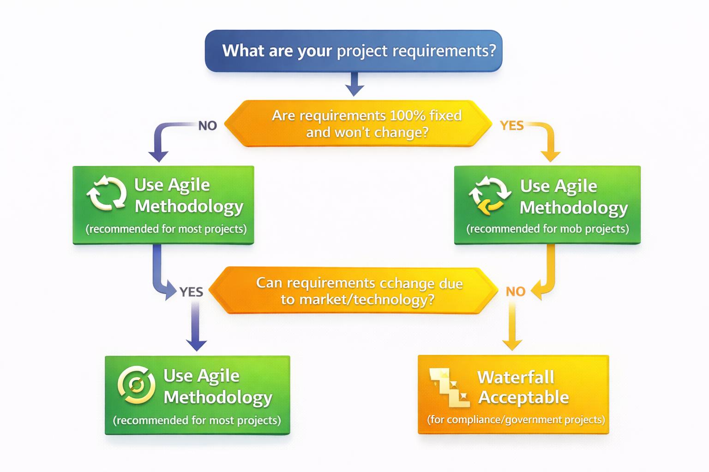

🌍 Real-Life Analogy
Think of SDLC like building a house:
Imagine you want to build your dream home. You don't just start throwing bricks together randomly, right? You follow a systematic process: First, you gather requirements (how many bedrooms? what style?). Then, an architect designs blueprints. Next, construction workers build it following the blueprints. After building, inspectors test everything (plumbing, electrical, structural safety). Once approved, you move in (deployment). Finally, you maintain it over the years (fixing leaks, repainting, upgrades).
Software development follows the exact same logical process! Just like you wouldn't skip the blueprint phase when building a house, you shouldn't skip the design phase in software development. SDLC ensures nothing is forgotten and everything is done in the right order.
📖 Detailed Explanation
The Software Development Lifecycle (SDLC) is a structured framework that defines the complete journey of creating software - from the initial idea to deployment and ongoing maintenance. Think of it as a roadmap that ensures nothing important is missed along the way.
What is it? SDLC is a step-by-step process that software teams follow to plan, create, test, and deploy software applications. It breaks down the overwhelming task of building software into manageable phases, each with specific goals and deliverables.
Why does it matter? Without SDLC, teams would work chaotically - developers might start coding before understanding what users actually need, or deploy software without proper testing, leading to disasters. SDLC provides structure, reduces risks, improves quality, and ensures everyone knows what needs to happen when.
How does it work? SDLC works as a continuous cycle with six main phases. After deployment, the process doesn't stop - teams monitor the software, gather user feedback, identify improvements, and the cycle begins again. This is why it's called a "lifecycle" - it never truly ends as long as the software is in use.
🔑 Key Concepts
- Requirements Phase: Understanding and documenting what the software should do - like interviewing a home buyer about their dream house before designing it
- Design Phase: Creating technical blueprints and architecture - deciding how the software will be built internally, which technologies to use, how data will flow
- Development Phase: The actual coding and building of the software - where developers write thousands of lines of code to bring the design to life
- Testing Phase: Checking if everything works correctly and finding bugs - like a home inspector checking plumbing, electrical, and structural integrity
- Deployment Phase: Releasing the software to users - making it available on the internet or app stores so customers can actually use it
- Maintenance Phase: Monitoring, fixing bugs, adding updates - like home maintenance (fixing leaks, repainting, upgrading appliances)
- Continuous Cycle: The process repeats based on user feedback and new requirements - software is never truly "finished"
💼 Real-World Scenarios
Scenario 1: Best-Case Implementation ✅
| Aspect | Details |
|---|---|
| Context | A fintech startup building a mobile banking app follows SDLC strictly. They spend 2 weeks gathering detailed requirements from target users, 2 weeks on design, use Agile sprints for development with continuous testing. |
| Challenge | Need to launch secure banking app in competitive market within 6 months without security vulnerabilities or bugs that could lose customer trust. |
| Solution | Followed SDLC rigorously: Requirements documented in Jira, design reviewed by senior architects, development in 2-week sprints with automated testing, security audits before each deployment, gradual rollout with monitoring. |
| Outcome | Launched on time with zero security breaches in first year. 98% crash-free sessions. Featured in app stores. Acquired 100,000 users in 3 months. Investors impressed by systematic approach, funded Series A. |
Scenario 2: Worst-Case Scenario ❌
| Aspect | Details |
|---|---|
| Context | Eager startup with limited funding decides to skip "unnecessary phases" to launch faster. CEO says "We'll figure it out as we go. Just start coding!" Team jumps straight to development without proper requirements or design. |
| Challenge | Building e-commerce platform but different developers have different understanding of what features to build. No clear design or architecture. Testing is "we'll test when everything is done." |
| Solution | No solution - chaos ensued. Developers built conflicting features. Shopping cart didn't work with payment system. Database not designed to scale. Deployed to production with major bugs thinking they could fix later. |
| Outcome | Website crashed on launch day. Customers couldn't checkout. Payment failures lost $50K in first week. Security vulnerability exposed customer data. Company faced lawsuits. Shut down within 6 months. Wasted $500K in funding. |
Scenario 3: Edge-Case Scenario ⚠️
| Aspect | Details |
|---|---|
| Context | Healthcare company building patient portal follows SDLC but skips proper maintenance phase. "It's working, we're done!" Development team moves to new projects immediately after launch. |
| Challenge | Portal launches successfully, gets 10,000 active users. But no one is monitoring errors, user feedback ignored, security patches not applied. Small bugs pile up unnoticed. |
| Solution | After 6 months, security vulnerability discovered by hackers (not internal team). Emergency patch required but original developers already forgot codebase. Scrambled to fix under pressure. |
| Outcome | Fortunately caught before major breach, but caused 2-day downtime. User trust damaged. Learned hard lesson: Maintenance is not optional - it's continuous. Now have dedicated team monitoring 24/7 with proper SDLC maintenance phase. |
📊 Scenario Comparison
| Scenario | Use Case | Best Practice Applied | Outcome |
|---|---|---|---|
| Best-Case | Fintech banking app with high security needs | All SDLC phases followed rigorously with documentation and reviews | Successful launch, zero security issues, 100K users, Series A funding |
| Worst-Case | E-commerce platform rushing to market | Skipped requirements, design, and testing phases completely | Launch day disaster, data breach, lawsuits, company shutdown |
| Edge-Case | Healthcare portal ignoring maintenance | Good initial SDLC but neglected maintenance phase | Security vulnerability, 2-day downtime, but learned and recovered |
Key Learning: Every phase of SDLC exists for a reason. Skipping phases to "save time" actually costs more time and money when things go wrong. Maintenance is not optional - software needs continuous care like a living system.
⚙️ Practical Implementation
While SDLC is a process framework rather than a technical tool, here's how teams implement it in practice using modern tools:
Method 1: Using Project Management Tools (Jira)
Prerequisites:
- Jira account (free tier available)
- Team members with assigned roles
- Understanding of your project phases
Step 1: Create SDLC Workflow in Jira
- Log into Jira → Create new project
- Choose "Scrum" or "Kanban" board
- Configure workflow stages matching SDLC phases
- Set up columns: Requirements → Design → Development → Testing → Deployment → Maintenance
Step 2: Create User Stories for Requirements Phase
- Click "Create Issue" → Select "Story"
- Write user stories: "As a user, I want to login with email so that I can access my account"
- Add acceptance criteria: "Given user enters valid credentials, when they click login, then they should see dashboard"
- Tag stories with "Requirements" label
Step 3: Move Through SDLC Phases
- Drag stories from "Requirements" to "Design" when design starts
- Attach design documents, mockups to stories
- Move to "Development" when coding begins
- Link Git commits to Jira stories for traceability
- Move to "Testing" when development completes
- Attach test results, bug reports
- Move to "Deployment" when tests pass
- Move to "Maintenance" post-deployment for monitoring
Method 2: Using Documentation (Confluence/Notion)
- Requirements Documentation:
- Create page: "Project Requirements"
- Document functional requirements: "System shall allow users to reset password via email"
- Document non-functional requirements: "System shall respond within 2 seconds"
- Get stakeholder sign-off
- Design Documentation:
- Create architecture diagrams (system design)
- Database schema design
- API endpoint specifications
- Technology stack decisions
- Development Tracking:
- Link to GitHub repository
- Document coding standards
- Track sprint progress
- Testing Documentation:
- Test plans and test cases
- Bug tracking with severity levels
- Test coverage reports
- Deployment Checklist:
- Pre-deployment checklist (backup database, notify users)
- Deployment runbook (step-by-step)
- Rollback plan
- Maintenance Log:
- Incident reports
- Performance metrics
- User feedback tracking
✅ Success Indicators:
- Every feature has documented requirements before development starts
- Team knows which SDLC phase each task is in
- Clear handoffs between phases (design approved before coding starts)
- Nothing deployed without passing tests
- Ongoing monitoring and maintenance in place
✅ Best Practices
| Practice | Why It Matters | How to Implement |
|---|---|---|
| Document Everything | Prevents misunderstandings and provides reference when team members change | Use Confluence/Notion to document requirements, design decisions, test results |
| Get Stakeholder Sign-off on Requirements | Ensures everyone agrees on what's being built before expensive development starts | Requirements review meeting with product owner, developers, designers, testers |
| Never Skip Testing Phase | Bugs found in production cost 10x-100x more to fix than in testing | Automated testing + manual QA testing before any deployment |
| Plan for Maintenance from Day One | Software needs continuous care; neglect leads to security issues and technical debt | Allocate 20% of team capacity for maintenance, monitoring, bug fixes |
| Use Version Control for Everything | Enables tracking changes, collaboration, and rollback if needed | Git for code, documentation, configuration files, infrastructure definitions |
| Regular Reviews at Phase Transitions | Catches problems early before they propagate to next phase | Design review before development, code review before testing, security review before deployment |
🔀 Decision Flow
Use this decision tree to determine which SDLC methodology is right for your project.

Figure 1: Decision Tree for Choosing SDLC Methodology
Image Details for Generator:
- Type: Flowchart/Decision Tree
- Start Point: "What are your project requirements?"
- Branches:
- If requirements are 100% fixed and won't change → Use Waterfall (for compliance, government projects)
- If requirements may evolve based on user feedback → Use Agile (for most modern software)
- If need rapid iteration with continuous deployment → Use Agile + DevOps (for web apps, SaaS)
- Style: Professional flowchart with clear decision diamonds, arrows, and result boxes showing methodology recommendations
🔧 Troubleshooting
| Issue | Possible Cause | Solution |
|---|---|---|
| Requirements keep changing mid-development | Using Waterfall methodology for project that needs flexibility | Switch to Agile methodology with shorter sprints to accommodate changes |
| Development takes much longer than estimated | Insufficient time spent in design phase, technical debt from poor architecture | Invest more time upfront in design phase; refactor architecture before adding features |
| Bugs keep appearing in production | Inadequate testing phase, rushed deployments without proper QA | Implement automated testing, expand test coverage, never skip testing |
| Team doesn't know what to work on next | Poor planning and tracking of SDLC phases | Use project management tool (Jira) to visualize workflow and track progress |
| Stakeholders unhappy with final product | Requirements not clearly documented or validated upfront | Get written sign-off on requirements; show regular demos during development |
| Production issues but no one knows how to fix | Original developers left, no documentation maintained | Document architecture, maintain runbooks, ensure knowledge transfer |
📊 Visual Architecture

Figure 2: Software Development Lifecycle - Continuous Process
SDLC Phase Flow:
- Requirements: Gather what users need and document clearly
- Design: Create technical blueprints and architecture
- Development: Write code to implement the design
- Testing: Verify functionality and find bugs
- Deployment: Release to production for end users
- Maintenance: Monitor, fix issues, gather feedback → loops back to Requirements
💡 Key Takeaways
- SDLC provides structure to software development preventing chaos and wasted effort
- Every phase exists for a reason - skipping phases to save time backfires badly
- Requirements must be clearly documented before design and development begin
- Testing is not optional - it's cheaper to find bugs before production
- Maintenance is continuous, not a one-time activity after launch
- Choose methodology based on project needs - Waterfall for fixed requirements, Agile for evolving products
- Documentation enables team scaling and prevents knowledge loss when people leave
- Regular reviews at phase transitions catch problems early